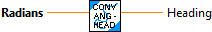
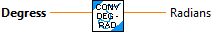
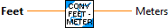
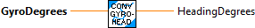
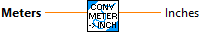
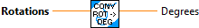

Convert angle (degrees) to heading (+/- 180) (degrees)
NOTE: increases counter clockwise

Convert angle (radians) to heading (+/- PI ) (radians)
NOTE: increases counter clockwise

Convert Centimeters to Meters

Convert Degrees to Radians

Convert Degrees to Rotations

Convert Feet to Meters

Convert angle (radians) to heading (+/- PI ) (radians)
NOTE: gyro increments clockwise. Headings increment counterclockwise. (NOTE: Be careful to check the rotation of your gyro before using this routine to adjust it.)

This routine does nothing!

Convert Inches to Meters

Convert mass in kilograms to pounds.
Input:
- kilograms -- mass in kilograms
Outputs:
- pounds -- mass in pounds

Convert Meters to Feet

Convert Meters to Inches

Convert POSE from Meters, Radians to Feet, Degrees. (This is really only for external use. All the internal routines use meters and radians.)

Convert mass in pounds to kilograms
Input:
- pounds -- mass in pounds
Output:
- kilograms -- mass in kilograms

Convert Radians to Degrees

Convert Radians to Rotations

Convert Rotations to Degrees

Convert Rotations to Radians

Convert Yards to Meters